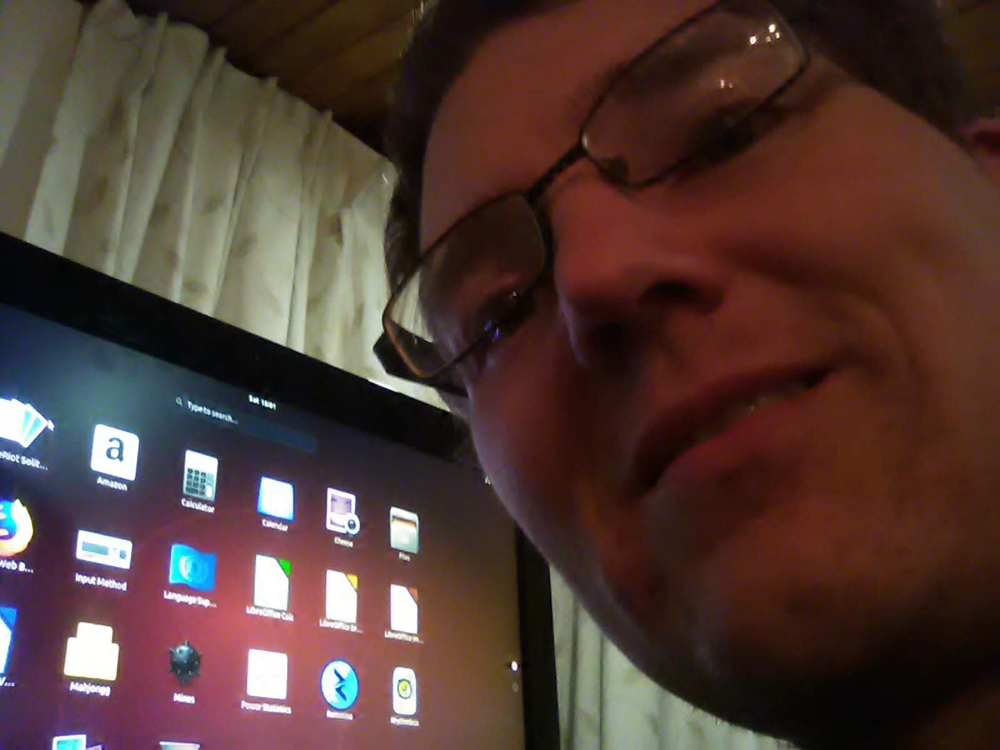

Explain a situation where you have had an ethical decision to make. Discuss how you weighed up the values involved in that decision, the decision you made, and the consequences of the action you took.
"There was a situation where we almost encountered Group Think. There was only one female colleague on the team who was unsure if she agreed with everyone. It had been a long day and we all just wanted to make a quick decision. But, I and another friend stuck up for this young lady. It ended up not only saving a company contract but establishing several others."
Describe how your culture has influenced your values and identity.
"My values have been shaped by my mother and my father. Both have been managers and have been responsible for the care of many people under their employment. They always believed in treating their staff and clients with respect and care."
Evaluate your strengths and limitations in terms of your learning and career development
"I think my strongest asset is my desire to question. My family are passionate readers and we enjoy staying informed about current events and what’s happening in the world. We love to learn and I like to think that the decisions I make are based on reasonable and rational calculations. My limitation in itself may be my continual search for many answers because of my many questions. This can leave me doubtful of the choices I make."
Identify which of your strengths might help you in your learning journey and how they might intersect with learning obstacles.
"Yet, I think my curiosity is what will be my biggest strength. It has contributed to one of humankind’s greatest discoveries and I think questioning and constantly evaluating myself through my questions will make me a better student."
Share an example from your experience of where you were trying to work productively with others, but there was resistance or tension. Discuss the strategies you used at that time, how effective they were, and your reflections on what other strategies you would try now, and why.
"In one recent meeting, we reduced the tension by breaking the ice through team-building games. Rather than forcing individuals to combat each other, it asked them to work together. Later when it came to dealing with the business problem I found the group was less likely to go against previous teammates they had worked with within the group game activity. It was a great success." 